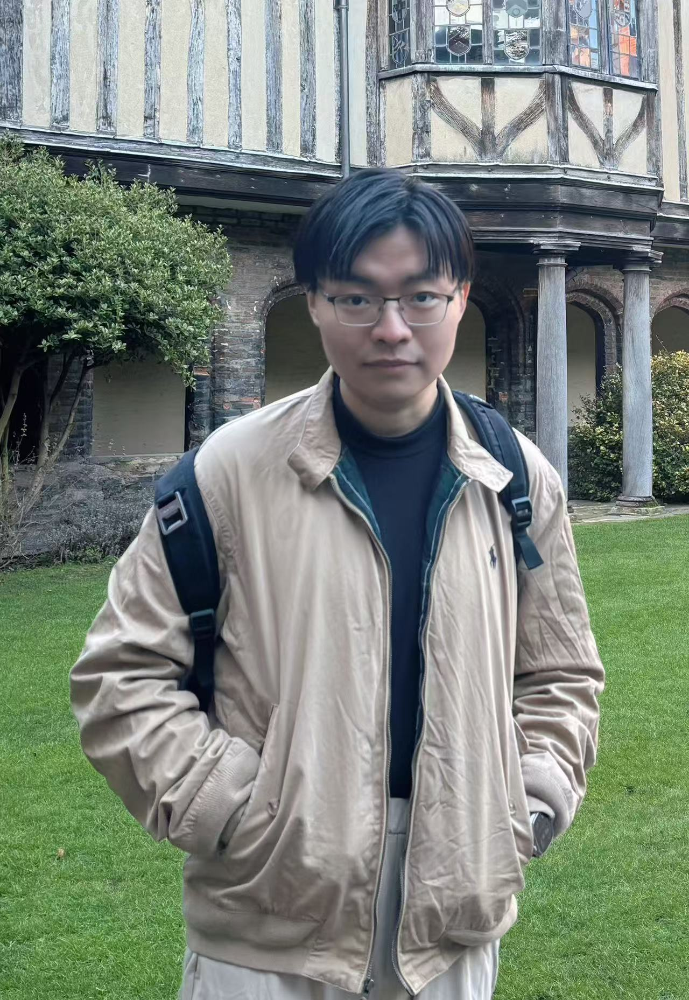

|
 |
Junlin Han
Undergraduate student at ANU.
Research student at Imaging and Computer Vision Group, Data61, CSIRO.
Australian national univeristy (ANU)
Data61, Commonwealth Scientific and Industrial Research Organisation (CSIRO)
Location: Synergy Building, CSIRO Black Mountain Site, Acton ACT 2601, Australia.
Profile |
Research Interests |
Education |
Experience |
Publications |
Talks |
Services |
Skills |
Awards
Email: junlinhcv@gmail.com, junlin.han@data61.csiro.au.
[Google Scholar]
[GitHub]
[ORCID]
[Curriculum Vitae] Google scholar and ORCID are under construction.
|